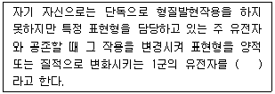
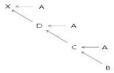
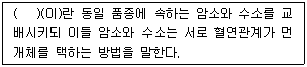
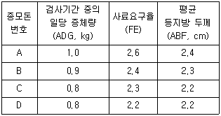
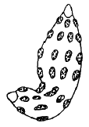
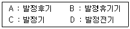
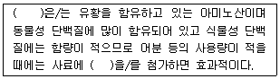
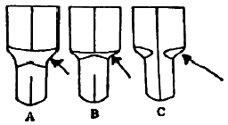
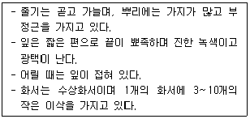
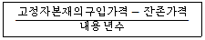

축산기사 (2015-09-19 기출문제)
1과목: 가축육종학
1. 두 유전자가 우열성에 관계없이 각각 담당하는 형질이 독립적으로 잡종에 함께 나타나는 유전 현상은?
- 완전우성
- 공우성
- 부분우성
- 불완전우성
(정답률: 76%)

2. 돼지의 품종 중 산자수가 많고, 비유능력이 양호하며 새끼돼지를 잘 키우는 품종은?
- Berkshire 종
- Hampshire 종
- Landrace 종
- Duroc 종
(정답률: 82%)
3. 다음 중 표현형에만 근거를 두고 그 개체의 육종가(Breeding value)를 추정하는 방법은?
- 가계선발
- 형매검정
- 혈통선발
- 개체선발
(정답률: 76%)
4. 다음 중 ( )에 알맞은 내용은?

- 상위유전자
- 억제유전자
- 동의유전자
- 변경유전자
(정답률: 67%)
5. 암소의 생산기록을 보정하기 위한 고정환경요인에 가장 적합하지 않은 것은?
- 비유기간
- 착유횟수
- 체중
- 연령
(정답률: 62%)
6. 한 개체에 대하여 특정 형질이 반복하여 발현되고 측정될 수 있다면 동일한 개체에 대해 측정된 기록간에 상관관계가 형성되는데, 이에 해당하는 상관계수를 무엇이라 하는가?
- 육종가
- 유전력
- 반복력
- 유전상관
(정답률: 84%)
7. 생후 160일령에 이유한 송아지의 이유시 체중이 180kg이었고 360일령에 350kg이 되었다면 이 소의 이유 후 일당 증체량(kg)은?
- 0.65
- 0.75
- 0.85
- 0.95
(정답률: 83%)
8. 표준화된 선발차와 의미가 같은 것은?
- 선발강도
- 선발효과
- 선발반응
- 절단형선발
(정답률: 84%)
9. 닭의 품종인 우성 백(white) Leghorn종과 열성 백(white) Wyandotte종의 교배에 관한 설명 중 틀린 것은?
- 억제유전자에 의하여 지배된다.
- F2에서는 양성잡종 분리비의 변형인 13:3의 분리 비를 나타낸다.
- 열성 백색이다.
- 유색유전자의 발현이 억제된 것이다.
(정답률: 70%)
10. 다음 중 돼지의 교잡종 생산을 위하여 사용되는 부모돈의 품종으로 가장 적합하지 않은 것은?
- Landrace
- Yorkchire
- Duroc
- Limousin
(정답률: 84%)
11. 유전 변이를 크게 하는 방법은?
- 가급적 동일한 사양 관리 조건에서 사육한다.
- 외부로부터 새로운 유전자를 도입한다.
- 집단 내의 우수한 개체만을 골라 번식에 사용한다.
- 집단 내 개체 간에 무작위 교배를 실시한다.
(정답률: 64%)
12. 선발차(Selection Differential)란 무엇인가?
- 선발된 개체들의 평균 능력
- 선발된 개체들의 평균과 가장 능력이 우수한 개체와의 차이
- 선발전의 집단 평균과 선발된 집단의 평균과의 차이
- 선발전의 집단 평균과 가장 능력이 우수한 개체와의 차이
(정답률: 77%)
13. 다음 중에서 근친교배를 가장 옳게 설명한 것은?
- 유전자를 고정시킬 수 있다.
- 집단 내 동형접합체의 비율을 줄인다.
- 잡종교배에 비하여 우수한 자손을 생산한다.
- 강건한 자손을 생산한다.
(정답률: 85%)
14. 다음 중 돼지의 경제형질이 아닌 것은?
- 모색
- 산자수
- 성장률
- 사료요구율
(정답률: 87%)
15. 다음 중 한우의 이유 후 증체율에 대한 설명으로 가장 적절하지 않은 것은?
- 이유 후 증체율이 높으면 사료이용성이 좋다.
- 이유 후 증체율이 높으면 생산비가 저하된다.
- 이유 후 증체율은 이유 후 일당 증체량으로 표시한다.
- 이유 후 증체율의 유전력은 0.25로 낮다.
(정답률: 67%)
16. 그림과 같은 가계도를 가지를 X개체의 근교계수는?

- 0.125
- 0.250
- 0.375
- 0.500
(정답률: 54%)
17. 다음 중 ( )에 알맞은 내용은?

- 이계교배
- 후대검정
- 혈통선발
- 자매검정
(정답률: 78%)
18. 종돈 능력 검정소에서는 검정이 끝나면 다음의 선발지수를 이용하여 종모 돈을 선발한다고 한다. 출품된 종모 돈의 성적이 다음 표와 같을 때 선발지수가 가장 높은 종모돈은? (단, 아이오와주의 검정방법을 기준으로 한다.)

- A
- B
- C
- D
(정답률: 49%)
19. 돼지의 A품종과 B품종의 평균산자수가 각각 8두와 10두일 때 F1의 평균 산자수가 11두였다면 이 때의 잡종강세의 강도는?
- 16.6%
- 22.2%
- 26.6%
- 33.3%
(정답률: 70%)
20. 다음의 설명 중에서 잡종교배의 목적으로 가장 적절하지 않은 것은?
- 동형접합체의 개체를 많게 하기 위하여
- 품종 또는 계통간의 상보성을 이용하기 위하여
- 잡종강세를 이용하기 위하여
- 유해한 열성인자의 발현을 가리기 위하여
(정답률: 76%)
2과목: 가축번식생리학
21. 다음 중 후산정체 발생 율이 가장 높은 동물은?
- 돼지
- 말
- 토끼
- 소
(정답률: 63%)
22. 포유동물에서 초유를 먹이는 가장 큰 이유는?
- 필요한 면역물질을 공급하기 때문이다.
- 초기성장에 필요한 호르몬을 공급하기 때문이다.
- 소화가 잘되고 모체의 유즙분비를 지속시키기 때문이다.
- 단백질 등 필수 영양소가 많아 발육을 촉진시키기 때문이다.
(정답률: 84%)
23. 성숙한 포유동물에서 배란 직전에 호르몬의 혈중농도가 급상승하여 배란을 유도하는 정(positive)의 피드백작용을 하는 뇌하수체호르몬과 난소 호르몬을 올바르게 연결한 것은?
- 난포자극호르몬(FSH)-에스트로겐(estrogen)
- 황체형서호르몬(LH)-에스트로겐(estrogen)
- 난포자극호르몬(FSH)-프로게스테론(progesteron)
- 황체형성호르몬(LH)-프로게스테론(progesteron)
(정답률: 60%)
24. 다음 가축별 자궁의 형태를 올바르게 연결한 것은?
- 말-쌍각자궁
- 소-중복자궁
- 돼지-쌍각자궁
- 양-중복자궁
(정답률: 81%)
25. 융모막융모의 분포범위와 모양에 따른 태반의 분류 중 그림과 같은 것은?

- 산재성 태반
- 대상 태반
- 궁부성 태반
- 원반상 태반
(정답률: 63%)
26. 다음 중 일반적인 돼지의 평균 번식 적령기는 언제인가?
- 수컷 : 7개월경, 암컷 : 10개월경
- 수컷 : 10개월경, 암컷 : 10개월경
- 수컷 : 15개월경, 암컷 : 15개월경
- 수컷 : 20개월경, 암컷 : 20개월경
(정답률: 71%)
27. 젖소의 교배적기(수정적기)는?
- 발정 개시 전
- 발정 개시 직후
- 발정 종료 전후
- 발정 종료 후 2일째
(정답률: 78%)
28. 다음 중 가축의 성성숙에 결정적인 영향을 미치는 요인들만 나열한 것은?
- 습도, 계절
- 영양, 습도
- 유전적 요인, 계절, 영양
- 습도, 유전적 요인, 영양
(정답률: 80%)
29. 소나 돼지에서 과배란을 유기시키기 위해서 가장 많이 사용되는 호르몬은?
- 난포자극호르몬(FSH)
- 황체형성호르몬(LH)
- 임부태반 융모성 성선자극호르몬(HCG)
- 프로게스테론(Progesterone)
(정답률: 65%)
30. 소에서 비외과적인 방법으로 수정란을 이식 할 때 수정란을 이식하는 부위는?
- 난관
- 자궁
- 자궁경부
- 질
(정답률: 66%)
31. 정자가 수정능력을 최종적으로 획득하는 부위는?
- 정소
- 정소상체
- 정관
- 암컷의 생식기
(정답률: 78%)
32. 성숙한 암컷의 포유가축에서 난자가 제2차 성숙 분열하여 제2극체를 방출하는 시기는 언제인가?
- 배란 직전
- 배란 직후
- 수정 직전
- 수정 직후
(정답률: 65%)
33. 소의 황체낭종을 치료하는 약제는?
- 성선자극호르몬 방출호르몬(GnRH))
- 프로스타글란딘(PGF2α)
- 황체형성호르몬(LH)
- 임부융모성 성선자극호르몬(HCG)
(정답률: 70%)
34. 발정주기 동기화의 이점에 해당하는 것은?
- 분만관리 및 자돈관리가 어렵다.
- 수정란 이식기술의 발전을 돕는다.
- 인공수정의 실시가 용이하나, 그 이용효율이 낮아진다.
- 가축개량과 능력검정사업을 효과적으로 수행할 수 없다.
(정답률: 73%)
35. 다음 중 각 가축의 발정지속시간을 나타낸 것으로 틀린 것은?
- 소 : 18~19시간
- 돼지 : 2~3시간
- 산양 : 32~40시간
- 말 : 4~7일
(정답률: 80%)
36. 다음 중 소의 발정기 행동이 아닌 것은?
- 오줌을 소량씩 자주 눈다.
- 다른 소의 승가를 허용한다.
- 다른 소의 주위를 배회하는 경우가 많다.
- 주변의 다른 소리에 우둔하고 안정된다.
(정답률: 86%)
37. 젖소에서 수정란 이식에 필요한 다수의 수정란을 확보하기 위하여 실시하는 다배란 유기에 사용되는 호르몬이 아닌 것은?
- 임마혈청성 성선자극호르몬(PMSG)
- 난포자극호르몬(FSH)
- 프로스타글란딘(PGF2α)
- 성장호르몬(GH)
(정답률: 66%)
38. 다음 중 성숙한 암컷의 포유가축에서 정상적으로 일어나는 발정주기를 올바르게 4단계로 나누어 놓은 것은?

- B→D→A→C
- B→D→C→A
- D→C→A→B
- D→C→B→A
(정답률: 81%)
39. 난자의 구조 중 정자의 인지작용이 최초로 일어나는 장소는?
- 난자 세포막
- 투명대
- 난구세포
- 난포막
(정답률: 72%)
40. 다음 중 돼지의 인공수정용 액상정액을 보관하기 위해 보존 적온과 실용상 보존가능 기간으로 가장 적절한 것은?
- 10~12℃, 1~2일
- 16~17℃, 2~3일
- 20~21℃, 4~5일
- 23~24℃, 6~7일
(정답률: 64%)
3과목: 가축사양학
41. 다음 중 펠릿사료의 단점에 해당되는 것은?
- 사료섭취량이 증가한다.
- 지용성 비타민의 산화속도가 느리다.
- 음수량이 증가한다.
- 유해한 박테리아나 바이러스를 파괴한다.
(정답률: 52%)
42. 다음 ( )안에 알맞은 것은?

- lysine
- methionine
- vitamin A
- vitamin B
(정답률: 68%)
43. 다음 중 갑상선에서 생성되는 호르몬으로서 결핍 시 체단백질 합성을 감소시키며, 과잉 시 아미노산 산화를 촉진시키는 것은?
- growth hormone
- thyroxine
- insulin
- androgen
(정답률: 62%)
44. 다음 중 단백질 함량이 가장 높은 사료는?
- 대두박
- 옥수수
- 쌀겨
- 밀기울
(정답률: 75%)
45. 다음 중 가축에 있어 필수 지방산은?
- propionic acid
- acetic acid
- linolenic acid
- stearic acid
(정답률: 69%)
46. 산란계에 있어서 강제환우에 대한 설명으로 옳지 않은 것은?
- 산란계의 육성비를 절감할 수 있다.
- 특란 및 대란 생산율을 높일 수 있다.
- 비용을 절감하기 위해서는 초생추를 육성하는 것이 좋다.
- 계란 가격이 낮은 시기를 피하고 계란 가격이 높은 시기를 맞추어 계란을 생산할 수 있다.
(정답률: 64%)
47. 우리나라 돼지에서 가장 널리 쓰이고 잇는 사양표준은?(오류 신고가 접수된 문제입니다. 반드시 정답과 해설을 확인하시기 바랍니다.)
- ARC
- NRC
- JRC
- KRC
(정답률: 65%)
48. 반추위에서 생성된 프로피온산이 체내에서 포도당으로 전환되는데 반드시 필요한 미량 원소는?
- 코발트
- 구리
- 아연
- 셀레늄
(정답률: 51%)
49. 산란계 사료는 난각 형성을 위해 Ca 함량이 다른 축종보다 높다. 적정 Ca함량(%)으로 가장 적합한 것은?
- 0.5% 이내
- 1.5% 이내
- 2.0% 이내
- 3,5% 이내
(정답률: 52%)
50. 반추동물의 위 중에서 단위동물의 위와 비슷한 기능을 가진 위는?
- 제1위
- 제2위
- 제3위
- 제4위
(정답률: 72%)
51. 다음 중 필수아미노산이 아닌 것은?
- 알라닌(alanine)
- 라이신(lysine)
- 루신(leucine)
- 발린(valine)
(정답률: 57%)
52. 소의 복부 왼쪽에 위치되어 있으며, 내부는 근대에 의하여 배낭, 복낭, 2개의 후맹낭등으로 이루어진 것은?
- 제1위
- 제2위
- 제3위
- 제4위
(정답률: 66%)
53. 다음 중 개방우상식 우사의 특징이 아닌 것은?
- 젖소의 개체관리가 가장 용이하다.
- 건초를 자유롭게 채식시킬 수 있다.
- 발굽의 손상이나 외상이 적다.
- 관리하는 데 노동력이 적게 든다.
(정답률: 53%)
54. 다음 중 에너지 함량이 가장 높은 사료는?
- 옥수수
- 우지
- 대두박
- 어분
(정답률: 51%)
55. 위에서 주로 분비되는 단백질 분해효소는?
- Pepsin
- Trypsin
- Carboxypeptidase
- Amino peptidase
(정답률: 83%)
56. 어느 사료의 조단백질 함량이 20%이고, 조 단백질의 소화율이 80%이라면 가소화 단백질 함량은?
- 12%
- 14%
- 16%
- 24%
(정답률: 74%)
57. 다음 중 백색지방을 만들어 고기의 맛이 좋아지게 하는 대표적인 비육의 사료는?
- 보리
- 황색옥수수
- 대두박
- 콩
(정답률: 59%)
58. 400kcal를 생성할 수 있는 전분과 같은 양의 지방을 가축에 급여하였다면 이 지방이 발생하는 에너지량은?
- 600kcal
- 900kcal
- 1300kcal
- 1800kcal
(정답률: 59%)
59. 다음 중 다당류에 속하지 않는 것은?
- glucose
- starch
- glycogen
- cellulose
(정답률: 59%)
60. 사일리지 제조에 적당하지 않은 조건은?
- 적당한 온도와 수분을 부여할 것
- 다져 넣을 때 공기를 배제할 것
- 잡균의 번식을 방지할 것
- 단백질의 함량이 많은 재료를 사용할 것
(정답률: 78%)
4과목: 사료작물학 및 초지학
61. 영양 생장기관에 의한 클로버의 식별요령으로 잎이 길쭉하며 흰무늬가 있고, 잔털이 많은 초종은?
- 레드 클로버(red clover)
- 크림손 클로버(crimson clover)
- 화이트 클로버(white clover)
- 알사이크 클로버(alsike clover)
(정답률: 49%)
62. 다음의 사일로 중에서 양분 이론적으로 손실이 가장 적은 사일로는?
- 벙커 사일로
- 트렌치 사일로
- 기밀 사일로
- 스테그 사일로
(정답률: 62%)
63. 화본과 사료작물의 형태적 특징 중 “지상에 나와 수평으로 기어가는 줄기”를 의미하는 것은?
- 포복경
- 지하경
- 제1차근
- 분얼경
(정답률: 74%)
64. 다음 중 사일리지 옥수수의 수확 적기는?
- 옥수수 수염이 나오기 시작한 후부터 10~20일째
- 옥수수 수염이 나오기 시작한 후부터 50~55일째
- 옥수수 수염이 나오기 시작한 후부터 70~80일째
- 옥수수 수염이 나오기 시작한 시기
(정답률: 60%)
65. 다음 중 다년생 사료작물은?
- 티머시
- 이탈리안 라이그라스
- 옥수수
- 헤어리베치
(정답률: 60%)
66. 화본과 목초의 예취적기에 대한 설명 중 옳은 것은?
- 화본과 목초는 출수초기가 예취적기이다.
- 2번초 이후의 예취적기는 황숙기이다.
- 생육단계와 무관하게 30일 간격으로 예취한다.
- 파종 후 90일 전후이다.
(정답률: 67%)
67. 다음 중 목초 및 사료작물의 이용에 따른 분류로 맞지 않는 것은?
- 수확용
- 청예용
- 방목용
- 사일리지용
(정답률: 63%)
68. 사일리지 발효의 첫 번째 단계인 호흡작용에 의한 손실을 최소화하기 위한 조치가 아닌 것은?
- 가능하면 세절하고 오랜 기간에 걸쳐 밀봉한다.
- 벽면주변 등 답압이 잘 안되는 곳 등을 집중적으로 답압한다.
- 윗부분은 수분이 약간 많거나 길이가 긴 재료로 충진하고 답압한다.
- 외부에서 공기나 물이 들어가지 않도록 꼼꼼히 밀봉한다.
(정답률: 63%)
69. 화본과목초와 두과목초의 혼파조합시 유리한 점이 아닌 것은?
- 질소비료의 시용을 줄일 수 있다.
- 파종작업 및 수확작업 등이 편리하다.
- 계절별로 균등한 목초생산이 가능하다.
- 가축에게 영양분이 높고 기호성이 좋은 풀을 공급할 수 있다.
(정답률: 71%)
70. 다음 초지의 특징에 대한 설명 중 옳지 않은 것은?
- 초지의 최종평가는 건물생산성에 두어야 한다.
- 초지는 여러 개의 과로 이루어진 혼생 집단이다.
- 초지구성 식물 집단은 안정된 계열로 행동하나 변화한다.
- 초지는 식물의 종간 및 품종간 경합이 특징으로 되어 있다.
(정답률: 57%)
71. 작물을 윤작함으로써 얻을 수 있는 이점으로 볼 수 없는 것은?
- 토지의 이용성을 높인다.
- 지력을 유지, 증진시킬 수 있다.
- 노력을 합리적으로 분배할 수 있다.
- 잔비량이 감소한다.
(정답률: 53%)
72. 다음 중 목초 생육에 대한 칼륨비료의 역할로 옳은 것은?
- 목초의 초기생육을 촉진하며 단백질 합성에 필수적이다.
- 토양 중에서 유식되기 쉽고 많이 시비하면 도장을 한다.
- 두과목초의 질소고정에 필요한 다량원소이다.
- 추위에 대한 내성을 높이며 가뭄에 대한 저항성을 준다.
(정답률: 40%)
73. 다음 중 경운용 작업기로 가장 적합한 것은?
- 도저
- 쟁기
- 해로우
- 레이크
(정답률: 60%)
74. 다음 사료작물 중에서 가장 짧은 기간에 재배이용이 가능한 작물은?
- 호밀
- 총체보리(청보리)
- 귀리(연맥)
- 이탈리안 라이그라스
(정답률: 45%)
75. 사료작물 중 사초용 수수잡종은 어떻게 이용하는 것이 사료로서 가장 적합한가?
- 방목
- 건초
- 청예
- 사일리지
(정답률: 47%)
76. 조사료가 절대적으로 부족한 우리나라에서 일정량의 조사료 수입은 피할 수 없다. 외국으로부터 조사료 수입으로 발생할 수 있는 사항이 아닌 것은?
- 수입조사료의 무분별한 수입은 축산농가의 조사료생산 의욕을 저하시킬수 있다.
- 수입조사료의 경우 각종 질병, 중금속 및 환경호르몬 등의 오염에 대한 우려가 없다.
- 가격이 저렴한 짚류 등의 저질조사료의 수입은 분뇨 발생량을 증가시켜 환경오염을 가중시킨다.
- 수입조사료에 의하여 국내에 없던 잡초종자들이 유입될 수 있다.
(정답률: 72%)
77. 영양생장을 하고 있는 사료작물의 식별방법 중 다음 그림의 화살표는 어느 부위를 나타내고 있는가? (단, 잎몸과 잎집 사이를 갈라놓는 분기점을 나타내는 분열조직대)

- 유경(bud shoot)
- 경령(collar)
- 엽초(sheath)
- 엽이(auricles)
(정답률: 58%)
78. 다음에서 설명하는 것은?

- 오차드 그라스
- 레드 클로버
- 톨 페스큐
- 페레니얼 라이그라스
(정답률: 41%)
79. 옥수수 흑조위축병(검은줄오갈벼)의 설명 중 옳은 것은?
- 서늘한 지역에서 황숙기에 발병
- 애멸구가 옮기는 바이러스병
- 잎에 흑색반점이 발생하는 점균병
- 멸강나방 가해 후 발생하는 검은 곰팜이병
(정답률: 47%)
80. 다음 방목에 대한 설명 중 틀린 것은?
- 방목은 가축이 스스로 운동과 일광욕을 하게 되어 건강상 좋다.
- 선택채식을 하기에 기호성이 나쁜 목초가 우세해져 초지식생에 나쁜 영향을 끼칠 우려가 있다.
- 분뇨를 방목지에 배설하므로 화학비료의 시비량을 줄일 수 있다.
- 사이리지, 건초에 비해 운반, 조제 및 저장에 소요되는 노력이 많다.
(정답률: 76%)
5과목: 축산경영학 및 축산물가공학
81. 다음 중 경영소득을 산출하는 식은?
- 조수익-경영비
- 조수익-생산비
- 순수익-경영비/조수익
- 순수익-생산비/조수익
(정답률: 52%)
82. 다음 중 브로일러 양계경영의 일반적인 장점에 해당하는 것은?
- 가격변화가 적다.
- 출하조정이 쉽다.
- 자본회전율이 빠르다.
- 수송과 보관이 쉽다.
(정답률: 65%)
83. 토지의 경제적 성질에 해당되지 않는 것은?
- 적재력
- 불가증성
- 불가동성
- 불소모성
(정답률: 66%)
84. 다음 중 비육돈경영에서 노동생산성을 규제하는 요인이 아닌 것은?
- 모돈의 사고율
- 육돈의 비육 회전율
- 비육돈의 두당 판매수입
- 사육돈 두당 투입노동량
(정답률: 56%)
85. 축산경영의 발전요인 중 내부적 요인이 아닌 것은?
- 경영자 능력
- 자원량 보유수준
- 축산물의 수요
- 기술수준
(정답률: 65%)
86. 다음 중 축산경영의 경제적 특징이 아닌 것은?
- 청예작물 재배를 통한 토지의 이용이 증진된다.
- 노동의 균둥한 투입으로 노동력 이용이 증진된다.
- 경종농업 부산물을 이용한 농산물의 이용이 증진된다.
- 경종농업보다 자연적인 피해를 많이 받는다.
(정답률: 67%)
87. 가족노동의 장점이 아닌 것은?
- 노동시간에 구애받지 않는다.
- 노동감독이 필요하지 않다.
- 노동에 대한 책임이 없다.
- 모든일에 창의적으로 임한다.
(정답률: 77%)
88. 다음 식과 같은 감가상각비 계산법의 종류는?

- 정액법
- 정율법
- 급수법
- 비례법
(정답률: 73%)
89. 생산비 중 유동비에 해당하는 것은?
- 지대
- 사료비
- 자본이자
- 감가상각비
(정답률: 74%)
90. 투입과 산출의 기술적 관계를 나타내는 함수는?
- 수요함수
- 이윤함수
- 생산함수
- 비용함수
(정답률: 63%)
91. 연유제조 시 사용되는 가장 효율이 높은 진공 농축기는?
- 박막 수직하강 관상형
- 박막 수직상승 관상형
- 원심분리식
- 진공펌프식
(정답률: 51%)
92. 신 맛과 청량감을 부여하고 염지반응을 촉진시켜 가공시간을 단축할 수 있어 주로 생햄이나 살라미 제품에 이용되는 것은?
- 염미료
- 감미료
- 산미료
- 지미료
(정답률: 66%)
93. 근육의 결합조직에 속하지 않는 것은?
- 교원섬유
- 탄성섬유
- 세망섬유
- 근원섬유
(정답률: 43%)
94. 발효유 중 발효방법이 나머지 셋과 다른 하나는?
- 요구르트
- 발효버터 우유
- 쿠미스
- 에시도필러스 우유
(정답률: 59%)
95. 육제품 제조 시 사용하는 아질산염의 주된 기능으로 틀린 것은?
- 미생물 성장 억제
- 풍미증진
- 염지육색 고정
- 산화촉진
(정답률: 74%)
96. 식육의 가열처리 효과로 볼 수 없는 것은?
- 조직감 증진
- 기호성 증진
- 다즙성 증진
- 저장성 증진
(정답률: 74%)
97. 육색에 대한 설명으로 틀린 것은?
- 고기색에 영향을 미치는 요인은 미오글로빈 양, 미오글로빈 분자의 종류와 화학적 상태이다.
- 돼지고기는 쇠고기보다 근육 내 미오글로빈 함량이 많다.
- 근육 내 미오글로빈 함량은 가축의 종류 및 연령과 관련이 있다.
- 운동을 많이 하는 근육일수록 호기성 대사를 주로 하고 육색이 짙다
(정답률: 71%)
98. 우유 균질의 장점 또는 효과가 아닌 것은?
- 우유 성분의 분리
- 소화 증진
- 크림층 형성의 방지
- 산화의 민감성 감소
(정답률: 64%)
99. 즉석섭취 축산물에 대한 설명으로 틀린 것은?
- 소비자가 바로 먹을 수 있도록 제조한 우유, 치즈, 요구르트 등이 해당된다.
- 리스테리아균 등의 저온성 식중독균이 증식할 수 있으므로 온도 관리를 철저히 해야 한다.
- 냉장제품의 권장 보관 및 유통온도는 6℃ 이하로 한다.
- 섭취 직전에 처리, 가공 과정 없이 단순한 조리를 하여 섭취할 수 있는 축산물이다.
(정답률: 58%)
100. 근원섬유단백질 중 칼슘이온 수용단백질로서 근수축기작에 중요한 기능을 가지고 있는 것은?
- 트로포닌
- 리소좀
- 엘라스틴
- 네불린
(정답률: 68%)